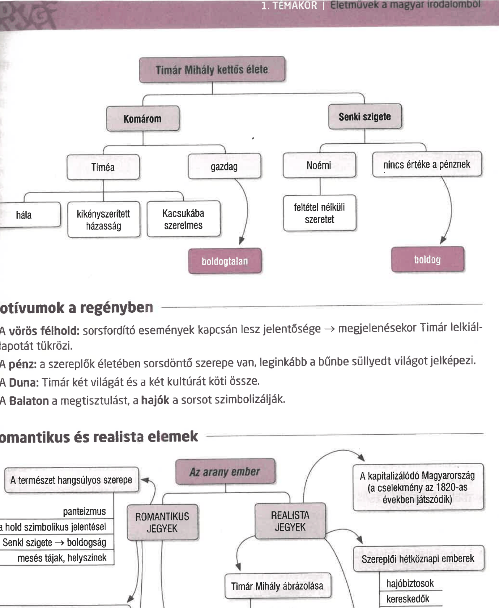

Romantika és realizmus, motívumok és emberi sorsok Jókai Mór Az arany ember című regényében
FELELETVÁZLAT
Jókai Mór és Az arany ember
- A romantikus próza legnagyobb alkotója, több mint száz regényt írt, köztük Az arany embert (1872).
- A regény a romantika és a realizmus hatását is mutatja.
- A cselekmény a kapitalizálódó Magyarországon, az 1820-as években játszódik.
- Forrása, alapja egy korabeli monda és több romantikus motívumvilág.
Timár Mihály, az „arany ember”
- Timár jelleme a regény során fejlődik: tisztaság, erkölcsösség jellemzi, majd megingás, csalás, korrupció és lelki vívódás jelenik meg benne.
- Életet ment meg a Szent Borbálán, amikor kitör a vihar, és nem adja fel Ali Csorbadzsi és a megszerzett kincsek sorsát sem.
- Kacsuka javaslatának sem mond ellent: az ázott búzából kenyeret süttet a katonáknak.
- Nem adja oda Timéának a vörös félholdnál megjelölt, kincsekkel teli zsákot, bár attól is tart, hogy Brazovics elvenné a lánytól.
- Tönkreteszi Brazovicsot és feleségül veszi Timéát, aki csak hálából és kötelességből kötődik hozzá.
- Kezdetét veszi a hazugságokkal terhelt kettős élet: egyik oldalon Komárom és a társadalmi lét, a másikon Senki szigete és Noémi világa.
- Krisztyán Tódor felbukkanása után, majd amikor Timár megszökik és visszatér, a „cserehalál” lehetősége ad számára alkalmat arra, hogy kilépjen a társadalomból és a Senki szigetén keresse a boldogságot.
Motívumok a regényben
- A vörös felhő a sorsfordító események motívuma, megjelenésekor Timár lelkiállapotára is utal.
- A pénz sorsdöntő szerepet kap, és leginkább a bűnbe süllyedt világ jelképe.
- A Duna két világot és két kultúrát köt össze.
- A Balaton a megtisztulás jelképe, a hajók pedig a sorsot szimbolizálják.
Romantikus és realista elemek
- A romantikus jegyek közé tartozik a természet hangsúlyos szerepe, a meseszerű helyszínek, a váratlan fordulatok, a kincskeresés és a nagy ellentétek rendszere.
- A realista jegyek a kapitalizálódó Magyarország társadalmi viszonyait, hétköznapi szereplőit és erkölcsi konfliktusait mutatják meg.
- Timár Mihály vívódó hős, fejlődésre képes jellem, akinek belső konfliktusai a regény mozgatórugói.
- A regény végkövetkeztetése egyszerre kínál menekülést és kérdőjelezi meg a szigeti lét lehetőségét.
